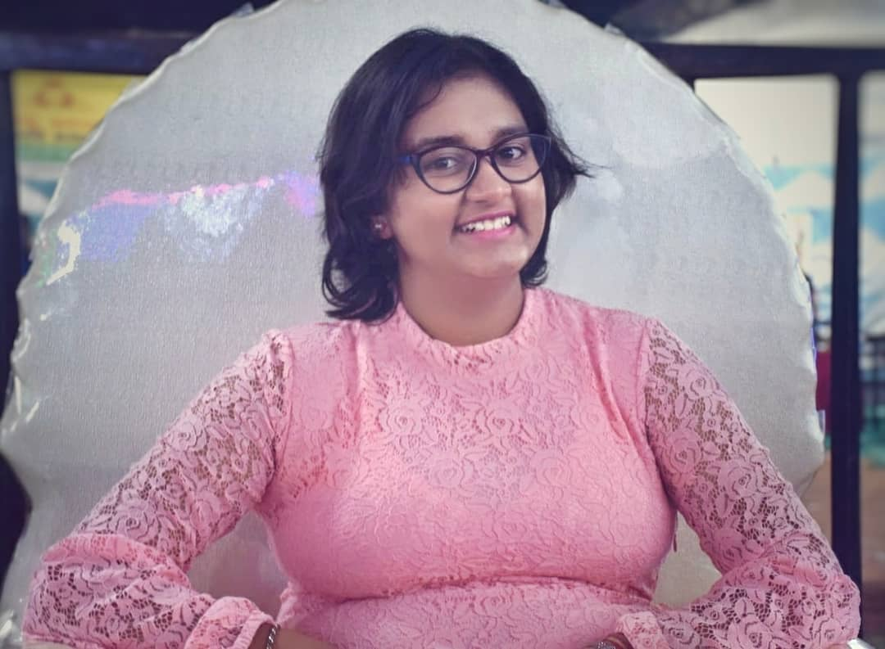

DEESHA MITRA

Summary
I am pursuing my BTECH in Computer science engineering. I am currently in my Third year.
I also have been pursing my bachelors in hindustani classical vocal from Pracheen kala kendra.
I have a passion towards web development alongside my music.
My people skills include problem solving , collaborating well in teams, decision making and team building.
I always look forward to learn new skills and acquire knowledge.
Education
- Primary and secondary education: Vagdevi Vilas Institutions, Marathahalli,Bangalore (2005-2021)
- Degree: Presidency University, Bangalore (2022-2026)- Btech in Computer Science and Engineering
- Music: Saraswant Music Academy (since 2012). Certified under Pracheen kala kendra, Chandigar board
Skills
- Soft skills:
- Public Speaking
- Team Building
- Decision Making
- Leadership
- Project Management
- Problem Solving
- Hard Skills:
- HTML
- Java(intermediate level)
- Python(intermediate level)
- SQL(intermediate level)
- CSS
- Javascript
- C#
-
Other Skills:
- Hindustani Classical Vocal
- Bharathnatyam
- Painting and arts
Achievments
- Passed Vishard part 1 from Pracheen kala kendra, Chandigar with distinction in both theory and practical.
- Won many musical events in inter and intra school fests.
Want to know more about me?
Click here to know more